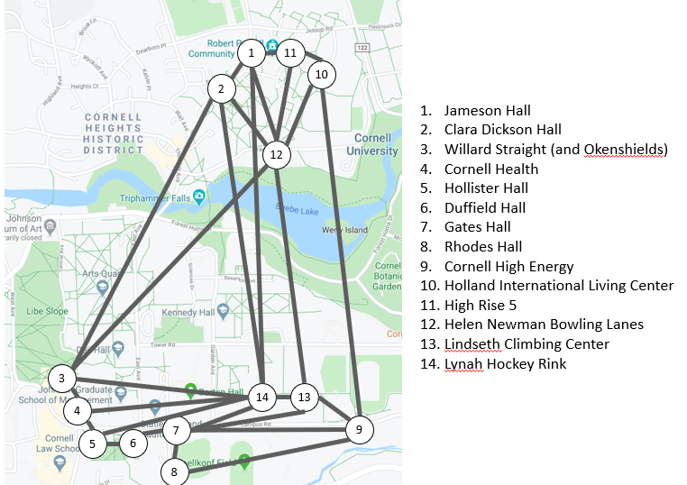

Introduction to Python and Mathematical Syntax
Contents
Introduction to Python and Mathematical Syntax#
Orienting Yourself: Jupyter Notebooks#
In ENGRI 1101, labs will be done through Jupyter Notebooks. The name “Jupyter Notebook” tries to convey what these are: notebooks that contain snippets of various items, including text, pictures, mathematical equations, and Python code. This handout is meant to be viewed as a Jupyter Notebook (more details below), in which case it will be interactive: you’ll be able to run code demos, double-click blocks of text to make edits, modify and write code, and type answers to questions. However, there is also a PDF version of this notebook meant as a reference handout. If you’re viewing the PDF version, you will not be able to interact with it. Instead, in the PDF version you will see code appear in gray boxes showing both the input and the output.
⚡ Key Note: In this course, we will use Python code for computation. Python is a powerful and relatively straightforward programming language. However, 1101 is neither a programming class nor does it have programming as a prerequisite! Our goal is for you to be able to read and make small changes to Python code, but we’re not expecting you to type large swaths of Python by yourself!
With that preamble, we can go into a bit more detail on Jupyter notebooks. A Jupyter notebook consists of cells of two main types: text cells (written using raw text and Markdown for formatting) and Code. So far, this notebook has only used text cells in Markdown, which allow you to do things like make tables and mathematical equations. Right now, you are seeing the Markdown text after it is already compiled. Double-click the bold text CLICK HERE to see the Markdown before it is compiled (assuming you’re viewing this handout as a Jupyter notebook and not a PDF). When you double click, you should see two asterisks (**) flanking each side of the bold text; those double-asterisks signify that you want bold text in Markdown. To go back to the compiled version of this text (and see all the formatting), press either CTRL+Enter (which compiles the cell) or Shift+Enter (which compiles this cell and moves to the next).
Task 1: Double-click and edit the next cell to fill in your name, then hit CTRL+Enter to compile the cell.
Name:
Basic Python and Juypter: Running Cells, Variables, Printing, and Comparisons#
Python is a powerful programming language. Here, we’ll just scratch the surface (take CS 1110 for more!): our goal is to summarize some of the main syntax that will help you read and understand code in future labs.
The next cell is our first example of a code cell, which contains (and lets the user run) Python code. The code in the next cell first creates a variable x and uses the equals sign to assign the value 1101 to x.
⚡ Key Note: In Python, the equals sign and notion of a variable are different from what you’ve probably seen in high school math. In high school, you generally think of a variable as something you solve for. In Python, you should think of a variable as a labeled envelope that stores data. In Python syntax, we use the equals sign to assign data to a variable. Hence, the code below effectively creates an envelope x containing the data 1101. When we ask Python to print(x), Python prints the corresponding data in that envelope (1101).
There are lots of ways you can execute the code (i.e., actually run the code): the easiest is to press CTRL+Enter or Shift+Enter, as you did with text cells earlier. There may also be a triangular run button (►) to the left of the cell or at the top of the Jupyter notebook which you can also click manually, like a play-button on Youtube.
Task 2: Run the cell below. As a sanity check, you should see 1101 printed after you run it.
x=1101
print(x)
1101
While the single equals sign = denotes assignment in Python, we can use the double-equals sign == in the more familiar sense to compare data/values. For instance, run the cell below. It reassigns x to a new value 1091, and then runs two comparisons: whether or not x equals 1091 (which is True) and whether or not x equals 1101 (which is False, now that we have reassigned x).
x=1091
print(x==1091)
print(x==1101)
True
False
After you run the above code cells, you might also notice a number appear in brackets next to it. These numbers allow you to tell which code cells have been run and in which order. If you run the above code cell again, for instance, you will see the number increase!
In addition to creating and printing variables, we can modify them. The following code increases x by 10.
Task 3: Run the cell below several times. Each time you run it, you should see x continuing to increase.
x=x+10
print(x)
1101
⚡ Key Note: Code cells within Jupyter notebooks are dependent on each other (and specifically, on which cells have been run and in what order). For instance, the above cell uses the fact that the variable x was defined in previously-run cell. Had you not already defined x, Python would not be able to evaluate x=x+10 and would produce an error. These labs are generally designed to be worked through sequentially, so that some code cells may only work if you have run previous code cells. As you move through Jupyter notebooks, make sure to run all intermediate code cells to avoid errors.
Python can also compare variables and numbers, as the following cell shows: we first have x store the value 42, and then run four different comparisons. Each print statement first describes the comparison. Then, syntax like x>42 evaluates to True or False, depending on the results of the comparison. The comma in the middle joins the text in quotes to the True/False output.
Task 4: Run the below cell. What would you expect to print if x was defined to be 50 instead of 42? Think through what should print out “by hand”, and then edit the value of x in the code cell to check your answer.
x=42
print("Is x bigger than 42: ", x>42)
print("Is x at most 42: ", x<=42)
print("Is x equal to 42: ", x==42)
print("Is x not equal to 42: ", x!=42)
Is x bigger than 42: False
Is x at most 42: True
Is x equal to 42: True
Is x not equal to 42: False
In the above cells, we created a single variable x and then assigned it a value / modified its value. Often we might want to define several variables, or define one in terms of another.
Task 5: What do you think the below code snippet should print? Think through what should happen “by hand” to x and y on each line of code, and then check your work by adding a statement that prints y and running the cell!
x=1000
y=x+100
y=y+1
Collections of Objects: Lists vs. Sets#
Above, we saw variables that stored a single piece of data. We might also be interested in storing collections of data.
A set is a collection of objects, where the order of objects does not matter. Mathematically, a set is denoted using curly braces, \(\{\) and \(\}\). For example, $\(\{1, 2, 7\}\)\( is a set consisting of 3 numbers (namely: the numbers 1, 2, and 7). Note that \)\(\{1, 2, 7\}=\{2, 1, 7\}\)\( since both sets have the exact same objects in them. Sets need not be numerical: as another example, \)\(\{\text{MATH 1910, PHYS 1112, CHEM 2090, ENGRI 1101, ENGRG 1050, ENGL 1111}\}\)\( might be the set of courses a first-year engineer is taking at Cornell. Note that this is *the exact same* set of courses as if we reversed the order: \)\(\{\text{ENGL 1111, ENGRG 1050, ENGRI 1101, CHEM 2090, PHYS 1112, MATH 1910}\}.\)$ Both sets represent the exact same collection of courses.
The following cell shows how to define a set in Python. The code below works like our earlier code, and creates two variables (set1 and set2 that, like x and y above, are assigned data). Note that Python recognizes that set1 and set2 the same.
set1 = {1, 2, 7}
set2 = {2, 1, 7}
print(set1==set2)
True
Mathematically, we use the symbol \(\in\) to mean “in” or “is a member of.” For example, $\(2\in \{1, 2, 7\}\)\( since \)2\( is a member of the set \){1, 2, 7}$. Python can also evaluate these statements using the word in:
set1 = {1, 2, 7}
print(2 in set1)
True
Task 6: Change the below cell to define newset as the set of all even numbers between 2 and 10, including both 2 and 10. Then print whether or not 7 is in the new set. Do you expect the answer to be true or false?
# Hide outputs
newset = {1, 2, 7}
print(2 in newset)
True
A list is another way to store a collection of data, but where the order of objects matters. For example, suppose a friend was visiting Cornell’s campus, and you wanted to suggest a route for them to take through campus using the following map:

One route might be to start at Rhodes Hall (8), then visit Gates Hall (7), then visit the Lynah Hockey Rink (14), and finally visit the Lindseth Climbing Center (13). Using the map and key above, you could succinctly list this route as [8, 7, 14, 13]. This is distinctly different than if you switched the two middle numbers and gave the list/route [8, 14, 7, 13]: Google maps reports that the first route would take about 8 minutes to walk, but the second (which involves a lot of backtracking) is more than twice as long at 17 minutes!
In Python, we use the bracket notation (rather than curly brace notation) to define a list. Run the cell below, and contrast the output with the example using set1 and set2.
list1 = [8, 7, 14, 13]
list2 = [8, 14, 7, 13]
print(list1==list2)
False
We can use the exact same in syntax to determine whether or not something is in our list:
print("Is 2 in list1: ", 2 in list1)
print("Is 8 in list1: ", 8 in list1)
Is 2 in list1: False
Is 8 in list1: True
Accessing and Changing List Elements#
We can also access and change specific elements of a list. Python indexes from 0, so the first item of the list is at position 0, the second item is at position 1, and so on. For instance, the syntax below prints the data at position 2 of each of our previous route lists; we can see that the items at position 2 (the third visit in each route) are different.
list1 = [8, 7, 14, 13]
list2 = [8, 14, 7, 13]
print(list1[2])
print(list2[2])
14
7
Task 8: Will the following code evaluate to true or false? Think through it by hand before running the cell. Make sure you understand the output!
list1=[1, 2, 3, 4]
list2=[1, 3, 2, 4]
print(list1[1]==list2[1])
False
Just like we can access individual elements of a list, we can also change them. For instance,
list1=[1, 2, 3, 4]
list1[0]=1101
print(list1)
[1101, 2, 3, 4]
Task 9: What will list1 be at the end of the end of the following code block? Think through this by hand, but feel free to add a print statement to check your work!
list1=[1, 2, 3, 4]
list1[1]=1
list1[2]=0
list1[3]=list1[1]
⚡ Key Note: Remember that Python indexes from 0, so “the first thing in list1” is list1[0], the thing at index 0. This can take some getting used to!
For Loops and Summation#
In the first lecture, we saw an equation like $\(\texttt{time}[\texttt{visit}[1], \texttt{visit}[2]]+\texttt{time}[\texttt{visit}[2], \texttt{visit}[3]]+\cdots+\texttt{time}[\texttt{visit}[n-1], \texttt{visit}[n]]+\texttt{time}[\texttt{visit}[n], \texttt{visit}[1]].\)$
This is a bit lengthy to write, and throughout this course, we will use summation notation to be more succinct. When we want to evaluate large sums explicitly, we’ll use Python syntax that mirrors our mathematical notation.
Mathematically, we use the symbol \(\sum\) to denote a sum. For example, the notation $\(\sum_{i=0}^3 i^2\)\( means "sum the function \)i^2\( for all values of \)i\( from \)i=0\( to \)i=3\( (including both 0 and 3)". That is \)\(\sum_{i=0}^3 i^2= 0^2+1^2+2^2+3^2 = 0+1+4+9=13.\)$
In Python, we can use sum to directly add things in a list. For instance, to compute the above sum, run the following:
answer=sum([0, 1, 4, 9])
print(answer)
14
Thus, one way to compute \(\sum_{i=0}^3 i^2\) is to manually compute the individual terms (\(0^2, 1^2, 2^2,\) and \(3^2\)), type them in a list, and ask Python to sum the elements of that list. This approach, however, still requires us manually computing all the individual terms – we can make our lives even easier if we have Python build up the list of individual terms! To do so, we can use for loops, which allow us to step through collections of data.
Here, we will want use a for loop to step through our values from \(i=0\) to \(i=3\), computing \(i^2\) for each (and adding all values of \(i^2\) from \(i=0\) to \(i=3\) together). As a quick interlude, we’ll certainly need to compute squares to add these squares. Python syntax for \(a^b\) is a**b. For example, 3**2 is how we’d compute \(3^2\):
print(3**2)
9
Now lets first define a for loop that steps through our list [0, 1, 2, 3] of possible values of \(i\). At each step, we create a variable square storing the value of \(i^2\), and then print this information:
for i in [0, 1, 2, 3]:
print("i is ", i)
square = i**2
print("its square is ", square, "\n")
i is 0
its square is 0
i is 1
its square is 1
i is 2
its square is 4
i is 3
its square is 9
When we defined our for loop, we used the syntax for i in [0, 1, 2, 3]:. Using this syntax allows us to specify what list we’re iterating/stepping through (in our example, [0, 1, 2, 3], which comes after the keyword in). We also pick the name of the variable that “steps through” the list (in our example, i, which comes between the for and in keywords).
To compute our actual sum, we want to build a list [0, 1, 4, 9] of terms to add.
Task 10: Run the code cell below, which computes the sum \(\sum_{i=0}^3 i^2\) in a similar fashion to how we expanded it out mathematically. The code uses a little bit of new list syntax, but we’ll shortly step through exactly what’s happening.
terms = []
for i in [0, 1, 2, 3]:
print("Appending the next term we want to add, when i=", i)
square = i**2
terms.append(square)
print("So far, we have built up the list ", terms, "\n")
print("We want to add the terms in the final list ", terms)
answer = sum(terms)
print("The sum is ", answer)
Appending the next term we want to add, when i= 0
So far, we have built up the list [0]
Appending the next term we want to add, when i= 1
So far, we have built up the list [0, 1]
Appending the next term we want to add, when i= 2
So far, we have built up the list [0, 1, 4]
Appending the next term we want to add, when i= 3
So far, we have built up the list [0, 1, 4, 9]
We want to add the terms in the final list [0, 1, 4, 9]
The sum is 14
Let’s trace through what just happened: we first build an empty list terms. We then use a for loop to step through our list [0, 1, 2, 3] and iterate from i=0 to i=3. For each value of i, we compute \(i^2\) and append it to the end of the list: we can see how the list terms grows from [] to [0^2] to [0^2, 1^2] to [0^2, 1^2, 2^2] to [0^2, 1^2, 2^2, 3^2]. When we finally have a full list of all terms we want to add, we use the sum function to add up all terms in that list and print the answer.
We can rewrite the code more succinctly by removing print statements:
terms = []
for i in [0, 1, 2, 3]:
square = i**2
terms.append(square)
answer = sum(terms)
print("The sum is ", answer)
The sum is 14
Task 11: Modify the above code so that it computes \(\sum_{i=2}^{6} i^2.\)
This syntax also allows us to sum over sets that are not just composed of successive integers. For instance, suppose we wanted to compute a sum $\(\sum_{i\in \{1, 2, 7\}} 2i,\)\( which means "sum \)2i\( for each member \)i\( of the set {1, 2, 7}." Thus \)\(\sum_{i\in \{1, 2, 7\}} 2i = 2(1)+2(2)+2(7)=20.\)$ In Python, we can compute:
terms = []
for i in [1, 2, 7]:
term = 2*i
terms.append(term)
answer = sum(terms)
print("The sum is ", answer)
The sum is 20
⚡ Key Note: Notice that, in the above code cells, several lines are often indented under each for loop. Indents allow Python to recognize if a line is part of the for loop (and should be run at each step through it) or should be run after the entire for loop has completed.
Task 12: Run the following two code cells and compare the output. The first code cell is one we’ve seen before. In the second, where only the first line in the for loop is indented, we don’t compute and print \(i^2\) at every step of the for loop: we only print it once, after we’ve fully gone through the for loop (and i stores the data 3, the last value it took on during the for loop). Remember: Indentation matters!
for i in [0, 1, 2, 3]:
print("i is ", i)
square = i**2
print("its square is ", square, "\n")
i is 0
its square is 0
i is 1
its square is 1
i is 2
its square is 4
i is 3
its square is 9
for i in [0, 1, 2, 3]:
print("i is ", i)
square = i**2
print("its square is ", square, "\n")
i is 0
i is 1
i is 2
i is 3
its square is 9
Using Range for Larger Lists#
Suppose we wanted to compute $\(\sum_{i=0}^{100} i^2,\)\( the sum of \)i^2\( from \)i=0\( to \)i=100$. Mirroring our work above, we could use a for loop like for i in [0, 1, 2, ..., 100]. Typing out that full list of all integers from 0 to 100, however, would be quite tedious. Happily, Python has syntax for doing so using range. For example, run the following two code cells. Notice that they do exactly the same thing!
for number in [0, 1, 2, 3, 4]:
print(number)
0
1
2
3
4
for number in range(5):
print(number)
0
1
2
3
4
⚡ Key Note: Remember that Python’s indexing might seem a bit funky. range(5) goes through “the first 5 numbers, starting at 0”: it starts at 0, and goes up to (but does not include 5).
Task 13: Use range to rewrite the following so that it computes \(\sum_{i=0}^{100} i^2\). All you have to do is replace the list in the for i in [0, 1, 2, 3] with the appropriate range statement.
# Hide outputs
terms = []
for i in [0, 1, 2, 3]:
square = i**2
terms.append(square)
answer = sum(terms)
print("The sum is ", answer)
The sum is 14
If you got 328350, you’ve probably made a small mistake with Python’s indexing, and may want to review the key note above.
More Succinct Sums with Range#
For loops allow us to understand how Python might evaluate a sum term-by-term, but in practice we’ll often use more succinct notation that mirrors the mathematical sum notation. To do so, we use list comprehension notation and effectively build and sum the list terms in one foul swoop. We won’t go into much detail in list comprehensions in this course, but the syntax should start to feel a bit readable:
our_sum = sum(i**2 for i in range(4))
print(our_sum)
14
What’s the syntax doing? We create a variable our_sum to store the sum. Then we tell python to take a sum, and we specify that sum in parenthesis with syntax sum(SOME FUNCTION OF i for i in range(4)). Here for i in range(4) specifies that we want to iterate i through range(4), that is through i=0, i=1, i=2, and i=3. We are specifically asking to sum i**2 (i.e. \(i^2\)) as i iterates through this range.
Let’s look at one more example to highlight the connection between mathematical notation and Python syntax. Suppose we defined the function \(f(x)=x^3\). Then the notation $\(\sum_{x=3}^6 f(x)\)\( means "sum the function \)f(x)=x^3\( starting at \)x=3\( and going until \)x=6.\(" So: \)\(\sum_{x=3}^6 f(x) = f(3)+f(4)+f(5)+f(6) = 3^3+4^3+5^3+6^3.\)$
The Python syntax to evaluate this sum will almost exactly match our verbal interpretation “sum the function \(x^3\) for starting at \(x=3\) and going until \(x=6.\)” Our Python syntax translation is below. It uses range(a, b), which tells Python to start at a and go up to (but not including) b.
our_sum = sum(x**3 for x in range(3, 7))
print(our_sum)
432
Task 14: Compute the following sum by hand: \(\sum_{i=-1}^{2} f(i)\) where \(f(i)=(i^2+1)\). Then edit and run the cell below to check your work.
# Hide outputs
our_sum = sum(x**3 for x in range(3, 7))
print(our_sum)
432
Lists and Text-Based Data#
Above, we’ve seen for loops that iterate through collections of numbers. However, we might also want to iterate through text. For example, lets make a list of the stops on our earlier jaunt through Cornell highlights, and print the stops out one-at-a-time. This time, we’ll store our route as a list of strings rather than the list of integers [8, 7, 14, 13] we had before. Strings allow us to store text data, and are sandwiched between quote marks (it’s OK to use single quotes or double quotes, as long as you’re consistent!).
Run the two cells below. Notice that the first just prints the entire list. The second iterates (i.e., steps) through each thing in route. Thus, the for loop allows us to step through the items in route, one at a time; first the variable visit is assigned the data route[0] (in this case, Rhodes Hall) and is printed. Then we step to the next thing in the list; visit is assigned the data route[1] (in this case, Gates Hall) and is printed. We continue stepping through until we reach the end of the list.
route=["Rhodes Hall", "Gates Hall", "Lynah Hockey Rink", "Lindseth Climbing Center"]
print(route)
['Rhodes Hall', 'Gates Hall', 'Lynah Hockey Rink', 'Lindseth Climbing Center']
for visit in route:
print(visit)
Rhodes Hall
Gates Hall
Lynah Hockey Rink
Lindseth Climbing Center
Note that we used the exact same for VARIABLE NAME in COLLECTION: syntax as when using for loops to compute sums: here the collection we step through is the list route; as we step through all Cornell locations in that list, we create and print a variable named visit storing location. We could use any other variable name, like in the example below (where hamburger is used instead of visit). However, in practice it’s much better to use a helpful variable name like visit.
for hamburger in route:
print(hamburger)
Rhodes Hall
Gates Hall
Lynah Hockey Rink
Lindseth Climbing Center
Doubly-Indexed Lists and Nested For Loops#
Sometimes we will want to work with collections of data that depend on multiple variables. For example, imagine the setup to The Astronomer’s Problem: we have \(n\) stars, and for each pair of stars i and j, a value time[i, j] encoding the time it takes to move the telescope from star i to star j. The value time[i, j] thus depends on two variables: the star we’re moving from and the star we’re moving to.
Intuitively, it might be easiest to view these times as coming from a table. Concretely, suppose we had a toy example with four stars 0, 1, 2, and 3. Our time table might look like:
j=0 |
j=1 |
j=2 |
j=3 |
|
|---|---|---|---|---|
i = 0 |
0 |
3 |
5 |
2 |
i = 1 |
3 |
0 |
4 |
7 |
i = 2 |
5 |
4 |
0 |
3 |
i = 3 |
2 |
7 |
3 |
0 |
From the table, e.g., we can see that time[0, 2]=5 (the entry in the i=0 row and j=2 column), indicating that it takes 5 units of time to move the telescope from star 0 to star 2.
In Python, we can store such a table as a list of lists, though the syntax is a little messier: we create a variable time that stores four things, but each thing is its own list of length four. The idea is that the first thing in time (time[0]) corresponds to the first row of our table, the second thing in time (time[1]) corresponds to the second row of our table, and so on. For example, run the following cell to see the first row:
time=[[0, 3, 5, 2],
[3, 0, 4, 7],
[5, 4, 0, 3],
[2, 7, 3, 0]]
print(time[0])
[0, 3, 5, 2]
So time[0] is just an ordinary list. If we wanted to get the entry corresponding to the time it takes to move the telescope from star 0 to star 2, we want the thing in row 0 and column 2 of time. That is, the entry in index 2 of time[0]. Since time[0] is itself a list, find our answer by typing time[0][2]. Run the cell below to see this in action, and note that the answer happily matches what we found “by hand” in our table above.
print(time[0][2])
5
Nested For Loops#
We can iterate through this style of data using nested for loops. Run the code cell below to see an example of nested for loops.
for i in range(3):
for j in range(2):
print(i, j)
0 0
0 1
1 0
1 1
2 0
2 1
The outermost loop slowly iterates i through values in range(3) (i.e. from i=0 to i=1 to i=2). For each value of i, we go through another for loop, iterating j through values in range(2) (i.e. from j=0 to j=1). We then print the pair i, j, allowing us to see how Python iterates through these values. Note that, when i=0, we fully run through the inner loop (printing both 0 0 and 0 1). Then once we’ve fully executed that inner loop, we bump i up to 1 and start the inner loop all over again.
Let’s go back to our table storing the times of moving a telescope between various pairs of stars:
j=0 |
j=1 |
j=2 |
j=3 |
|
|---|---|---|---|---|
i = 0 |
0 |
3 |
5 |
2 |
i = 1 |
3 |
0 |
4 |
7 |
i = 2 |
5 |
4 |
0 |
3 |
i = 3 |
2 |
7 |
3 |
0 |
We stored this in Python as a list-of-lists time. If we wanted to print the time it takes to move the telescope between various pairs of stars, we can do so by using two for loops: one iterating through values of i and one iterating through values of j:
time=[[0, 3, 5, 2],
[3, 0, 4, 7],
[5, 4, 0, 3],
[2, 7, 3, 0]]
for i in range(3):
print("We are at i=", i)
for j in range(i+1, 4):
print("The time to move the telescope from star i=", i, " to j=", j, " is ", time[i][j])
print("\n")
We are at i= 0
The time to move the telescope from star i= 0 to j= 1 is 3
The time to move the telescope from star i= 0 to j= 2 is 5
The time to move the telescope from star i= 0 to j= 3 is 2
We are at i= 1
The time to move the telescope from star i= 1 to j= 2 is 4
The time to move the telescope from star i= 1 to j= 3 is 7
We are at i= 2
The time to move the telescope from star i= 2 to j= 3 is 3
There’s a lot going on in the above cell. One of the reasons is that the telescope-moving times in time happen to be symmetric, so for example time[0, 1]=time[1, 0]=3 (and in general, time[i, j]=time[j, i] for all i and j). Thus, we don’t need to display both time[0, 1] AND time[1, 0]: we can get away with only printing one. We structured the code above to only print time[i, j] with \(i<j\).
The first loop takes us through all values of i in range(3) and prints the value of i. We then have a nested for loop that starts at i+1 and goes up to (but not including) 4.
For example, the very first value of i is 0. When i is 0, we print We are at i= 0 and then go into the inner for loop. When i is 0, this loop simplifies to:
for j in range(1, 4):
print("The time to move the telescope from star i=", 0, " to j=", j, " is ", time[0][j])
That is, we go and print time[0, 1], then time[0, 2], and then time[0, 3].
⚡ Key Note: Remember that spacing allows Python to keep track of what lines are “nested under” each loop. For instance, the print("The time to...") line is nested under the second for loop, and runs for each value of j in that loop (so it prints three times when i=0). The next line, print("\n"), is unindented. It thus runs after the entire for j in range(i+1, 4) loop has completed, and adds a blank line between each i= case.
Conditional Statements#
Conditional statements allow Python to recognize and respond to different situations. For example, suppose we had a list of numbers, and wanted to respond differently to even and odd numbers. We can detect whether an individual number is even or odd by computing its remainder when we divide by 2. The Python syntax for remainder is %; below we compute the remainder of 5 when we divide by 2 and then the remainder of 117 when we divide by 10 (both of which you should sanity check!)
Task 15: Update the following cell to also have Python compute the remainder when you divide 340872 by 9183.
print(5%2)
print(117%10)
1
7
To tell if a number is even or odd, we look at its remainder when we divide by 2. The following code block uses this idea to detect which numbers in a list are even:
mylist=[1, 2, 3, 4]
for number in mylist:
print("number is: ", number)
if number%2 == 0:
print("number is even! WOOHOO!")
print("\n")
number is: 1
number is: 2
number is even! WOOHOO!
number is: 3
number is: 4
number is even! WOOHOO!
The the if block checks if number is even (by looking at number%2). If so, we print that it’s even. Otherwise we don’t do anything and just skip over that if block, printing the empty line and moving on to the next number in mylist.
If we wanted to separately respond to even and odd numbers, we could add another if statement that checked whether or not number was odd. But Python lets us be more clever, using an else statement: if number is not even, it must be odd, and the else statement tells us what to do in any case where the if condition is not met.
mylist=[1, 2, 3, 4]
for number in mylist:
print("number is: ", number)
if number%2 == 0:
print("number is even! WOOHOO!")
else:
print("number is odd. Boo!")
print("\n")
number is: 1
number is odd. Boo!
number is: 2
number is even! WOOHOO!
number is: 3
number is odd. Boo!
number is: 4
number is even! WOOHOO!
We can extend this example with if, elif, else logic: elif stands for “else if” and allows us to have additional conditional statements. For example, in the following code cell there are three possible cases: if a number is negative, positive, or zero. Our code works as follows:
We first check if the number is negative and, if so, respond accordingly.
If not, we go to the next condition in our
elifstatement and check if the number is positive. If so, we respond accordingly.If not, we enter our
elsestatement that catches every other case. If we make it to theelsestatement, we know thatnumberis neither<0nor>0and so must be exactly zero!
mylist=[-2, 42, 0, 1101]
for number in mylist:
print("number is: ", number)
if number < 0:
print("number is negative")
elif number > 0:
print("number is positive")
else:
print("number is zero")
print("\n")
number is: -2
number is negative
number is: 42
number is positive
number is: 0
number is zero
number is: 1101
number is positive
Defining Functions#
Above, we’ve seen lots of examples of code snippets that do something specific. However, so far they’ve all been applied to one specific set of data (a list of numbers, a doubly-indexed list of times, etc). Python allows us to define functions that are much more general.
For example, suppose we wanted to count the number of elements in a list that were even. We could use our machinery with for loops and if statements to do this: we can define a count_so_far variable thats initialized to 0, step through our list, and increase count_so_far every time we see an even number:
myList=[1, 2, 3, 4, 5, 6]
count_so_far = 0
for number in myList:
if number%2 == 0:
count_so_far = count_so_far + 1
print(count_so_far)
3
If we wanted to do this for a bunch of lists, copy/pasting and specializing the code for each list would get real tedious real fast – and that’s only for about 5 lines of code! Instead, we will write a new function that takes in a list and outputs (or returns) the number of even elements.
Mathematically, we know how to work with a function \(f(x)=x^2\) (e.g. we can evaluate \(f(3)=3^2=9\)). We can think of what we’re about to do as defining a new function that acts on lists, like $\(f(list) = \text{Number of even elements in list},\)\( so that \)f([1, 2, 3, 4, 5, 6])=3$. The Python syntax is below:
def count_even(input_list):
count_so_far = 0
for number in input_list:
if number%2 == 0:
count_so_far = count_so_far + 1
return count_so_far
count_even([1, 2, 3, 4, 5, 6])
3
As usual, lets step through it. The first line tells Python that we are defining (def) a function called count_even (a more helpful name than \(f\)!), and that its input will be a variable called input_list (just like \(x\) or \(list\) in our math notation above).
After telling Python that we are defining a function, all of the logic for that function is indented (like we’ve seen lots of times by this point!). The actual code for the function is almost exactly what we did before, except that we end with a return statement. This return statement specifies what the function will return to the user. In this case, our function returns the final value of count_so_far, the count of the even number of elements. This would allow us to potentially store these counts, like in the code below:
list1= [1, 1, 0, 1]
list2=[2, 4, 5, 8, 10]
count1 = count_even(list1)
count2 = count_even(list2)
print("list1 has ", count1, " even numbers")
print("list2 has ", count2, " even numbers")
print("In total, list1 and list2 have ", count1+count2, " even numbers")
list1 has 1 even numbers
list2 has 4 even numbers
In total, list1 and list2 have 5 even numbers
Here, when we run the functon count_even on list1, the function returns 1 (the number of evens in list) to the variable count1. Thus we can save that count to print in a subsequent line, and we can add it to count2 later. This is the advantage of ending a function with a return statement instead of a print statement: instead of just printing a single line for the user, we return the value for them to do with as they please!
Task 16: rewrite count_even as a new function count_1101 that counts the number of occurences of 1101 in a list. Then run the cell to test your work!
# Hide outputs
def count_1101(input_list):
count_so_far = 0
for number in input_list:
if number%2 == 0:
count_so_far = count_so_far + 1
return count_so_far
count_1101([1, 2, 1101, 5, 1101, 6, 8, 10])
4
As we start to see larger and larger Python functions, it will help to be able to “mark them up” with comments. To do so, we use the # symbol. Comments prefaced with this symbol don’t actually affect how the code compiles, but can be helpful to guide a reader through lines of your code.
Task 17: What does the following function do? Trace through each step through the for loop, and use the comments to help figure out what’s going on!
def fun_fcn(input_list):
# Set special_number to be the first element
special_number = input_list[0]
# Iterate through the list one at a time.
for number in input_list:
# Whenever we find an element bigger than special_number,
# update special_number to be that element
if number > special_number:
special_number = number
return special_number
fun_fcn([4, 2, 3, 50, 1101, 1, 56])
1101
Task 18: (Bonus task!) Put together everything you’ve learned to write a function fizz_buzz that takes in a variable n and prints the first n. Specifically, modify the below code cell so that it iterates from 1 up to n; for each number thats divisible by 3 it should print “fizz”; for each number that is divisible by 5 it should print “buzz”; for each number divisible by both 3 and 5 it should print “fizz_buzz”; and for all other numbers it should print the number.
Thus, if you called fizz_buzz(16), your output should be:
1
2
fizz
4
buzz
fizz
7
8
fizz
buzz
11
fizz
13
14
fizz_buzz
16
# Hide outputs
def fizz_buzz(n):
# Here is some starter code - but it doesn't quite work!
for i in range(n):
if i%3 == 0:
print("fizz")
else:
print(i)
fizz_buzz(100)
fizz
1
2
fizz
4
5
fizz
7
8
fizz
10
11
fizz
13
14
fizz
16
17
fizz
19
20
fizz
22
23
fizz
25
26
fizz
28
29
fizz
31
32
fizz
34
35
fizz
37
38
fizz
40
41
fizz
43
44
fizz
46
47
fizz
49
50
fizz
52
53
fizz
55
56
fizz
58
59
fizz
61
62
fizz
64
65
fizz
67
68
fizz
70
71
fizz
73
74
fizz
76
77
fizz
79
80
fizz
82
83
fizz
85
86
fizz
88
89
fizz
91
92
fizz
94
95
fizz
97
98
fizz